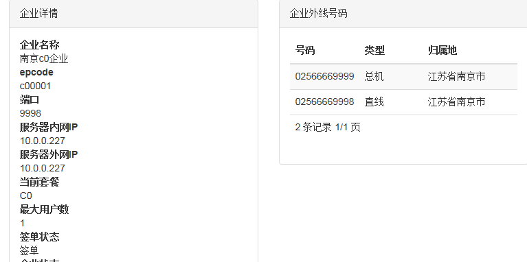

1. introduce¶
good good study ,day day up !
good good study ,day day up !
good good study ,day day up !
good good study ,day day up !oMygod
good good study ,day day up !oMygod
good good study ,day day up !
- one
- two three
- onechild
- twochild
- one
- two我是一个ingnew
onetwo
| Treat | Quantity | Description |
|---|---|---|
| Albatross | 2.99 | On a stick! |
| Crunchy Frog | 1.49 | If we took the bones out, it wouldn’t be crunchy, now would it? |
| Gannet Ripple | 1.99 | On a stick! |
1.1. read the docs¶
1.1.1. refer¶
See also
1.1.2. install¶
- apt install build-essential
- apt install python-dev
- apt install python-pip
- apt install python-setuptools
- apt install libxml2-dev
- apt install libxslt1-dev
- apt install zlib1g-dev
- apt install elasticsearch
- apt install redis-server
- pip install virtualenv
- virtualenv rtd && cd rtd
- source bin/activate
- apt install git
- git clone https://github.com/rtfd/readthedocs.org.git
- cd readthedocs.org
- pip install -r requirements.txt
- python manage.py migrate
- python manage.py collectstatic
- python manage.py loaddata test_data
- python manage.py runserver 0.0.0.0:8000
- apt install texlive-latex-recommended
- apt install texlive-fonts-recommended
- apt install texlive-latex-extra
- apt install latexmk
- make latexpdf LATEXMKOPTS=”-silent”
- apt install texlive-xetex
- apt install latex-cjk-all
1.1.3. usage¶
install Sphinx
apt install python-pip -y pip install sphinx sphinx-autobuild pip install --upgrade pip 安装最新版pip mkdir doc && cd doc sphinx-quickstart make html
- conf.py
latex_engine=xelatex 解决无法生成pdf问题 texhash 不知道干啥用的 ‘preamble’: ‘’‘
usepackage{xeCJK} 解决无法显示中文的问题
‘’‘